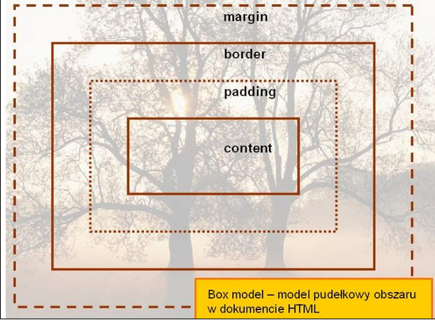

Model pudełkowy
Każdy element w dokumencie HTML, otacza się prostokątnym obszarem zwanym pudełkiem
(ang. Box model). Pudełko składa się z kilku warstw:
zawartość modelu pudełkowego:
• "content" – zawartość elementu (np.: tekst, obrazek)
• "padding" - otaczające marginesy wewnętrzne, odstęp między obramowaniem i
zawartością elementu
• "border" – obramowania wokół zawartości elementu, ma styl i kolor.
• "margin" – marginesy wokół ramki (margines zewnętrzny). Jest to pusty obszar wokół
ramki, który nie ma koloru tła i jest przeźroczysty.
Uwagi:
1)Padding, border i margin mogą mieć zerową wartość.
2)Tło elementu jest określone dla wszystkich z podanych powyżej obszarów z wyjątkiem
marginesów zewnętrznych, które zawsze są przezroczyste (transparent).
Model pudełkowy
(box model) przedstawiony został na schemacie
